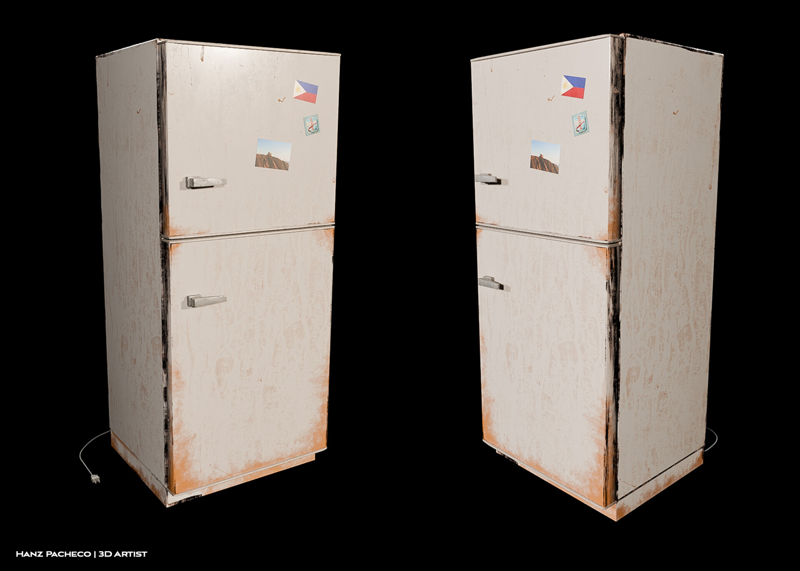
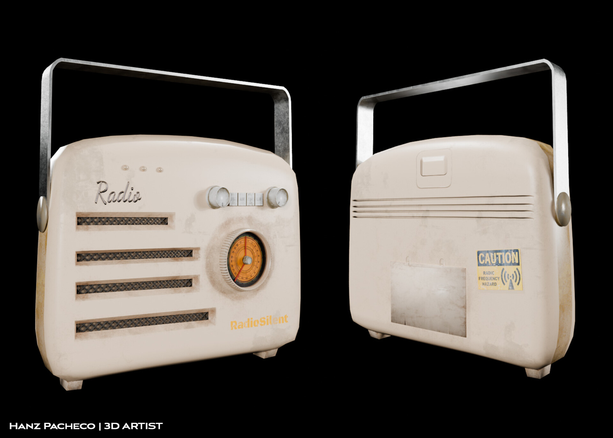

Hanz Pacheco
3D Environmental + Prop Artist
I'm Hanz Pacheco, a Filipino 3D artist based in San Francisco, California. I always strive to create environments that tell stories rich with textures, light, and intricate details that have evolved organically over time. Each process merges technical skill with an artistic sensibility, allowing me to build immersive worlds that aren’t just visually engaging but evoke a sense of place and atmosphere.
I am proficient in Blender, Substance Painter, and Aftereffects to make all of my models and 3D scenes. I then use Photoshop, Premiere, and ClipStudio to create my digital illustrations.
Featured 3D Projects
Please visit my artstation https://www.artstation.com/hanzarts.
You can also visit my Instagram https://www.instagram.com/hanzarts/#.
Old Fridge / Personal Project
This old fridge was modeled in Blender and textured using Substance Painter and Photoshop for the textures and decals. For more information visit Artstation
Artstation Personal PorffolioDigital Realms: Journey to 3D World

Journey to 3D Worlds consists of different 3D environment scenes I created in Blender. I want to exhibit my technical abilities as a 3D artist and also allow people to explore my story as an artist.
Watch My DemoReelVintage Radio/ Personal Project
This old radio was modeled in Blender and textured using Substance Painter and Photoshop. I created my own version with a vintage, retro aesthetic that I like.
Artstation Personal PorffolioWork Experience
Take a look at my LinkedIn LinkedIn.
3D Artist Intern
Icarus Development
Dec 2024 - Present
I help create 3D props and Environments for an upcoming mobile game. See more at icarusalpha.com.
Supervision Leader
Harker School Lower School
Oct 2023 - Jan 2025
Supervise and engage with students during these activities, creating a safe and supportive environment for their learning and development.
Key contributions:
Graphic Illustrator/ Printing Shop Assistant
Skyline College Graphic Arts Department
Jun 2022 - Aug 2023
Create designs, layouts, and artwork for print materials such as, school merchandise and flyers.
Key contributions:
- Create designs for flyers and school merchandise
- Maintain records of customer orders, inventory, and billing.
- Manage emails, phone calls, and other communication channels.
Education
San Jose State University - San Jose, CA
Digital Media Art, 2025
Bachelors of Arts focusing in 3D design and UI design
Skyline College - San Bruno, CA
Art History for Transfer, 2022
Double Major in Communications & Psychology.
Lauras College - Online
3D Modeling, 2017